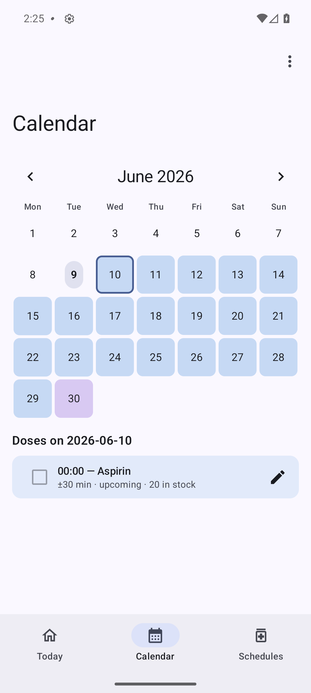
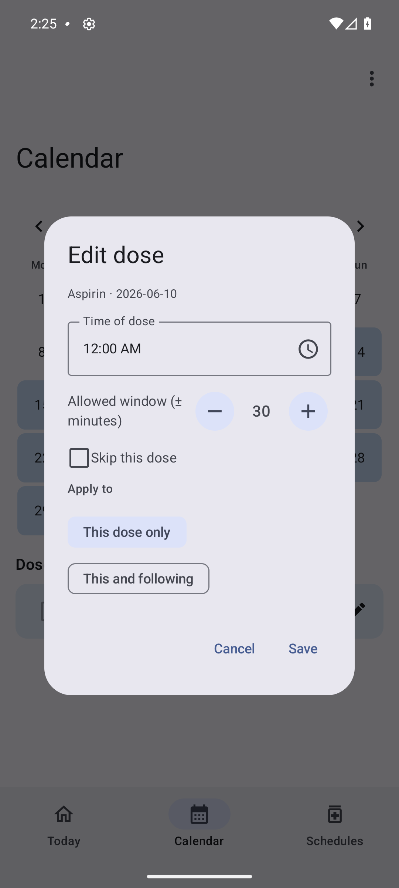

MedAboutYou
Know your medicines. Stay on your therapy. Keep your data.
A private, on-device medication manager for Android v0.2.0
The problem
- Medicine information is scattered across official databases that are hard to search on a phone.
- Adherence apps often upload sensitive health data to the cloud.
- Real therapies are messy: multiple times a day, weekly patterns, pauses, one-off changes.
MedAboutYou answers all three — locally.
What it does
- 🔎 Search EMA (Europe) & AIFA (Italy) medicine records
- 🗓️ Build any schedule — hourly → yearly, multi-time
- 🏠 Track Today with an adherence ring & "take all"
- 📅 A colour-coded Calendar + per-dose editing
- 📈 Insights: adherence, streak, heatmap, refills
- ⏰ Reminders + optional caregiver SMS

Privacy is the feature
- Schedules, dose log & stock are stored in one local SQLite database.
- Nothing is uploaded. No account, no analytics, no cloud sync.
- Network is used only to look up medicine info (EMA/AIFA/image).
- The one off-device action — a caregiver SMS — is opt-in and off by default.
Find a medicine
- EMA cached on-device → offline search; AIFA searched live.
- Rich record: indication, classification, authorisation.
- Type badges (Generic, Orphan, Biosimilar, PRIME…).
- Link to the official EPAR/RCP for dosing.
- Not listed? Add it as a custom medicine.
Schedule any therapy
- Once · Hours · Days · Weeks · Months · Years
- Several times per day; weekly multi-day patterns
- End on a date, after N doses, or ongoing
- An allowed window, reminder cadence & notes
- Smart edge-cases: day-31 clamps to month end; no Feb 29

Today & Calendar

- Adherence ring, time-of-day timeline, refill banner.
- Tick a dose from the start of its window (early-take).
- Month grid colour-coded: taken / upcoming / shortage / missed.
- Edit, retime or skip a single dose — or "this & following".
Edit a single dose

- Retime or re-window one occurrence.
- Skip this dose for a one-off.
- This dose only vs This and following (splits the series).
- The past is never rewritten — history stays intact.
Insights & refills
- 7 / 30 / 90-day adherence, current streak, missed count.
- 30-day heatmap and per-medicine bars.
- Refill forecast: when each medicine runs out — banner, calendar shortage days, and a sorted list.
Architecture
UI (Compose + ViewModels)
↓
Domain (pure, JVM-tested) ← ScheduleEngine · Insights
↓
Data — local (Room) + remote (OkHttp)
Reminders (exact AlarmManager + WorkManager fallback)- The domain layer has no Android dependency and is unit-tested.
- Analytics run on an immutable in-memory snapshot of the DB.
- Append-only: cancel = soft; edits start a new row from today.
Built with
Kotlin 2.1Jetpack ComposeMaterial 3 RoomDataStoreCoroutines / StateFlow WorkManagerAlarmManagerOkHttp kotlinx.serializationCoilMaterial You
Adaptive bottom-bar / nav-rail · light & dark · 5 languages.
Quality
✓ JVM
domain unit tests
✓ UI
Compose + Room instrumented
0
Lint errors
v5→v6
upgrade migration verified
Try it
Download the latest APK from the project website, or build with
./gradlew :app:assembleDebug.
An information & adherence aid — not medical advice.